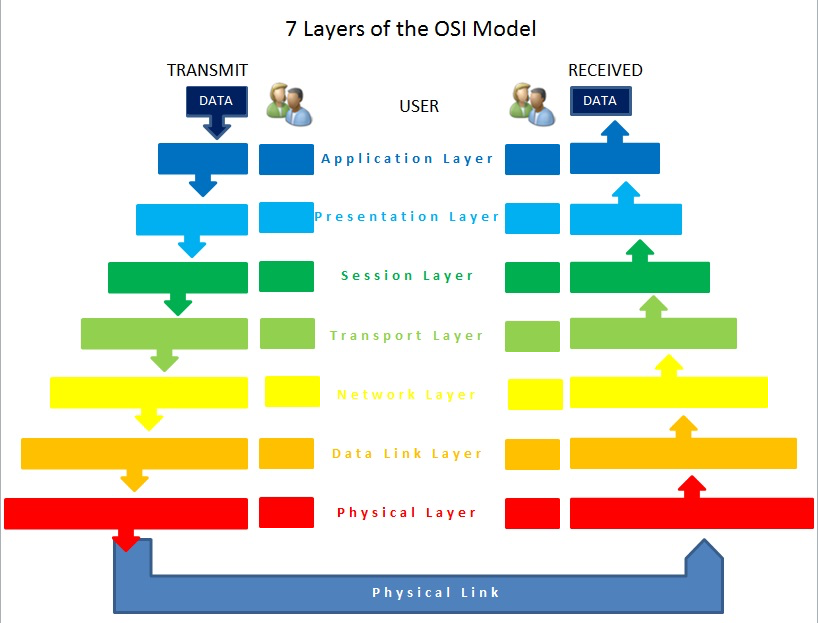

區分以太網和TCP / IP。
As an A+ certified technician, you will be introduced to the basics of computer networking, which is further covered when learning the CompTIA Net+ standards. Although CompTIA A+ does not test on the open systems interconnection model (OSI model), it is a theoretical model that is the basis for the way data travels through computer networks. When you click on an icon and connect to the Internet through a browser such as Google Chrome, Mozilla Firefox, or Internet Explorer, a request to connect is sent through a series of steps from the application layer down to the physical layer. All data physically enters and exits a computer node (client, server, or printer) through a network interface card (NIC) based on the type of medium being used (wireless, copper, or fiber-optic). The data packets are represented and interpreted using the binary number system.
作為A+認證的技術人員，將向你介紹計算機網絡的基礎知識，在學習CompTIA Net +標準時將進一步介紹這些知識。儘管CompTIA A +沒有在開放系統互連模型（OSI模型）上進行測試，但它是一種理論模型，是數據在計算機網絡中傳輸的基礎。當你單擊圖標並通過瀏覽器（例如Google Chrome，Mozilla Firefox或Internet Explorer）連接到Internet時，連接請求將通過從應用程序層到物理層的一系列步驟發送。根據使用的介質類型（無線，銅纜或光纖），所有數據都通過網絡接口卡（NIC）物理地進入和退出計算機節點（客戶端，服務器或打印機）。數據包將使用二進制數字系統表示和解釋。

Image used under CC-BY license from Russell Burchill.
Protocols/協議
In computer networking, a protocol is a set of communication rules by which data communication occurs. The popularity of Ethernet is based on the standardization of protocols and ability to use the TCP/IP suite to carry data throughout a variety of hardware devices.
在計算機網絡中，協議是通過其進行數據通信的一組通信規則。以太網的普及是基於協議的標準化以及使用TCP / IP套件在各種硬件設備中傳輸數據的能力。
Ethernet/乙太網路
Ethernet is defined by the IEEE 802.3 specification, which sets the standard and interoperability between devices, allowing communication over computer networks. These specifications control how data physically travels between nodes on both the physical layer and the data link layer through media access control (MAC). The hardware controlled by these specifications include NICs, wiring (i.e., cat 5, 5e, and 6) including the RJ-45 connectors, switches, and hubs.
以太網由IEEE 802.3規範定義，該規範設置了設備之間的標準和互操作性，從而允許通過計算機網絡進行通信。這些規範通過媒體訪問控制（MAC）控制數據在物理層和數據鏈路層上的節點之間的物理傳輸方式。這些規範所控制的硬件包括NIC，包括RJ-45連接器，交換機和集線器在內的佈線（即Cat 5、5e和6）。
TCP/IP(傳輸控制協定/網際網路協定)
Whereas Ethernet controls the physical data, transmission control protocol and Internet protocol (TCP/IP) is a suite of protocols that operate logically throughout the different layers of the OSI model as well as in the TCP/IP model.
以太網控制物理數據，而傳輸控制協議和Internet協議（TCP / IP）是一套協議，可以在開放式系統互聯模型的不同層以及TCP / IP模型中進行邏輯操作。